Tutorial¶
All data for the tutorial can be found here. Cecelia was designed to process static and live cell images. Both approaches follow a similar workflow to process and analyse images:
Importing images as OME-ZARR
Cleaning up images
Segmenting cells and structures
Creating populations
Extracting spatial properties
Creating figures
Tip
Going through these individual tutorials should take less than 1 h. The main routes are shown in pink while alternative options are shown in green.
Static image¶
We will analyse M3c-Arm1_5-XCR1_Venus-B220_PB-LCMV_AF594-P14_CTDR-CD3e_AF700-1_Unmixing-crop.tif which is a cropped version of a cross-section from XCR1-Venus (dendritic cells) reporter mice after virus (LCMV) infection.
1. Create a project¶
{kind=link}
2. Import the image¶
{kind=link}
3. Define channel names¶
The channels can be assigned one-by-one or as a list.
B220-PB
XCR1-Venus
LCMV-AF594
P14-CTDR
CD3e-AF700
AF

4. Correct autofluorescence¶

Two-photon imaging often requires correction for autofluorescence and drift due to tissue movement. In Cecelia we implemented these methods individually but also in combination.
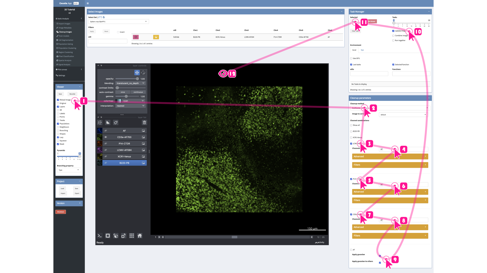
{kind=link}
5. Segment cells¶
In Cecelia we can combine the segmentations of these different levels into one result to extract populations. To this end, the user has to ensure that all cells and structures are segmented as expected. We therefore recommend to first segment inidividual channels before combining these. Cellpose is the main segmentation method utilised in Cecelia. Each segmentation must be given a Name. The name default must be given for the final segmentation while intermediate segmentation tests can have another name.
T and B cells have a similar size, roundish shape and are closely packed. These can be segmented using the cyto2 model and a relatively small diameter of 5 μm.
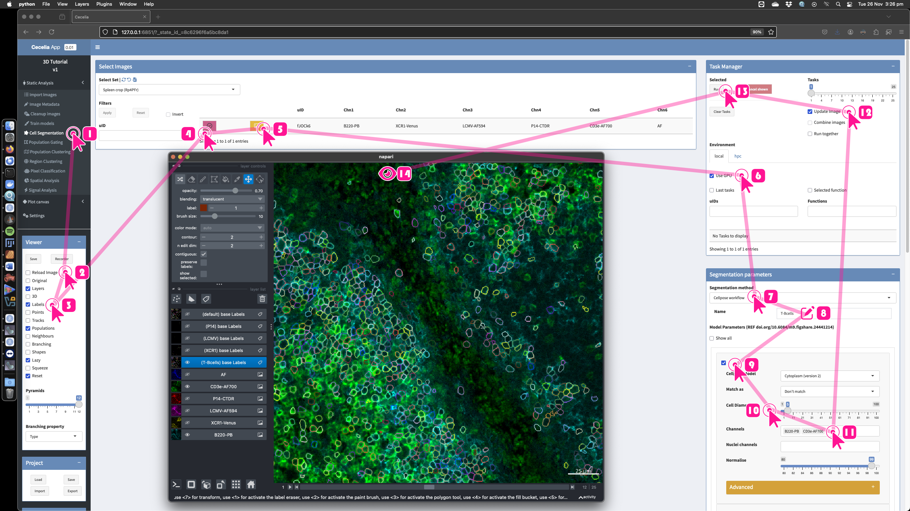XCR1+ dendritic cells have very different shapes and contain a cytoplasmic reporter rather than a membrane binding antibody. We have trained a Cellpose model, ccia Fluorescent, which was trained on overlapping T cells with a fluorescent reporter from 2-photon imaging. This model can also segment irregularly shaped dendritic cells.
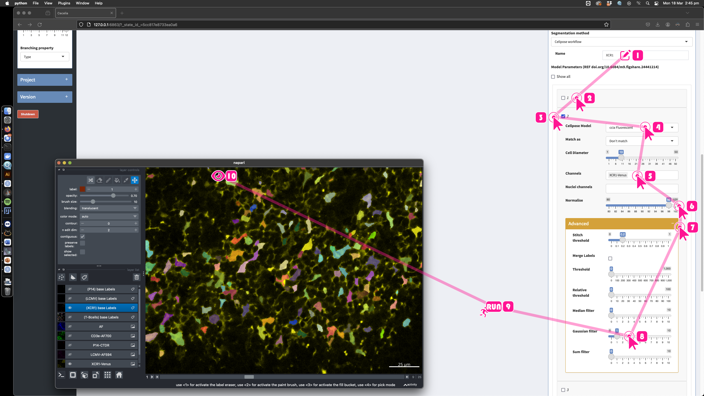The virus particles are also difficult to segment as they appear as separated yet closely cohesive patches of fluorescent signal. As these particles are so fragmented, we check Merge labels to merge touching segmentation labels.
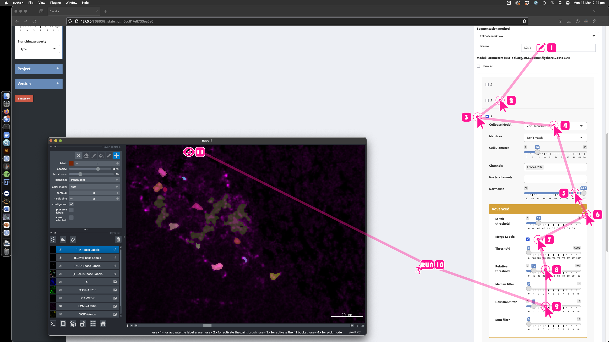LCMV specific T cells were labelled with a cytoplasmic dye. Although these are technically T cells, it is better to segment them separately to capture all cells. As this signal is very bright, we can use the standard cyto2 model.
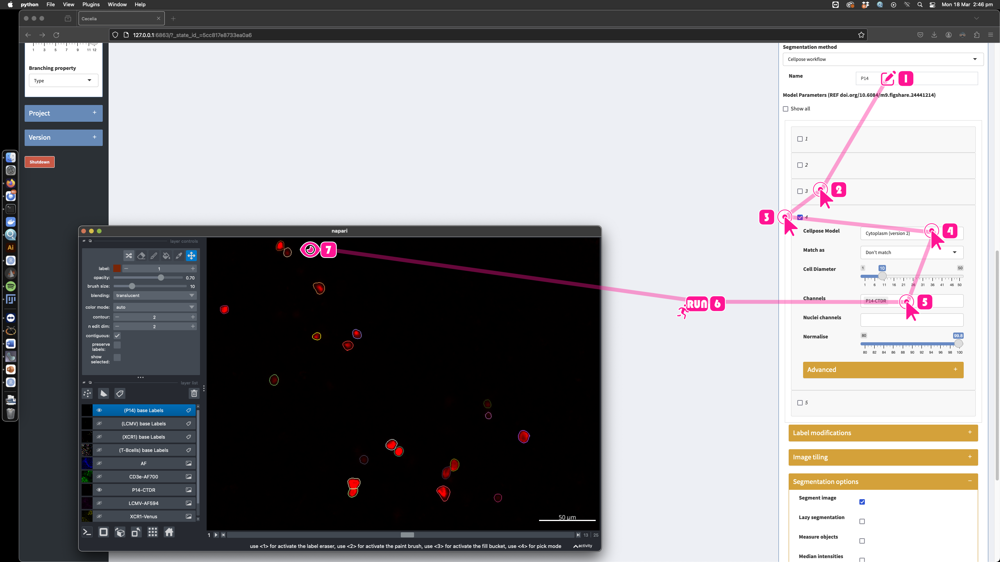Now you can tick all the boxes with the individual segmentation parameters and give the name default. This will go through the segmentation from top to bottom, that is, the last segmentation will be on top of everything else.
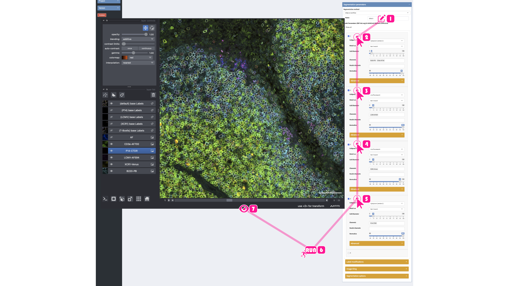Tip
For 3D images. If you require object measurements such as volume, then you must tick Extended Measurements in the Segmentation options.
To change the order, you can drag and drop the individual boxes.
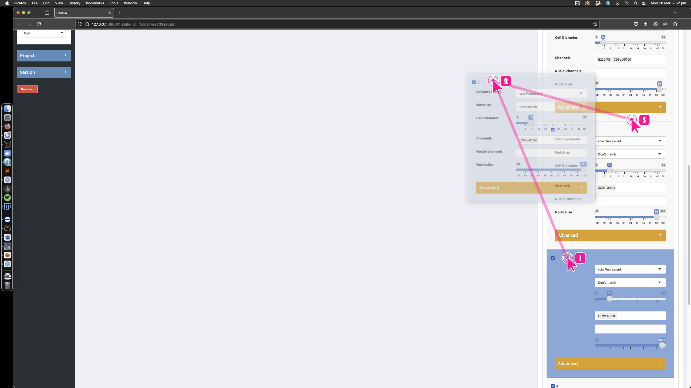
{kind=link}
{kind=link}
{kind=link}
{kind=link}
{kind=link}
{kind=link}
6. Define populations¶
Cell populations can be defined in various ways. One way is use sequential gating. Create a GatingSet.
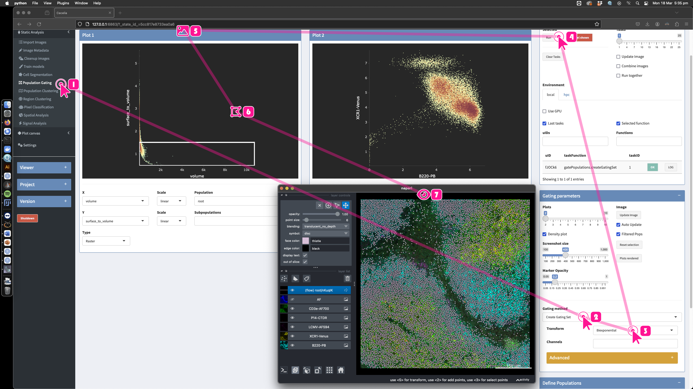Segmentation is not perfect, we can gate out objects that are small or have odd shapes by plotting volume vs surface-to-volume. After that, it depends on the specific context. There will be spillover between cells due to their proximity. It is therefore important to gate any populations that are sparse and closely associated with other cells first. The last population can be cells that are more abundant.
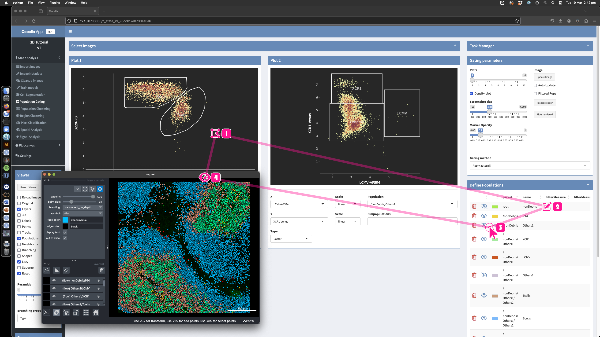The complete gating hierarchy can be visualised in the Flow Gating section of Plot canvas.
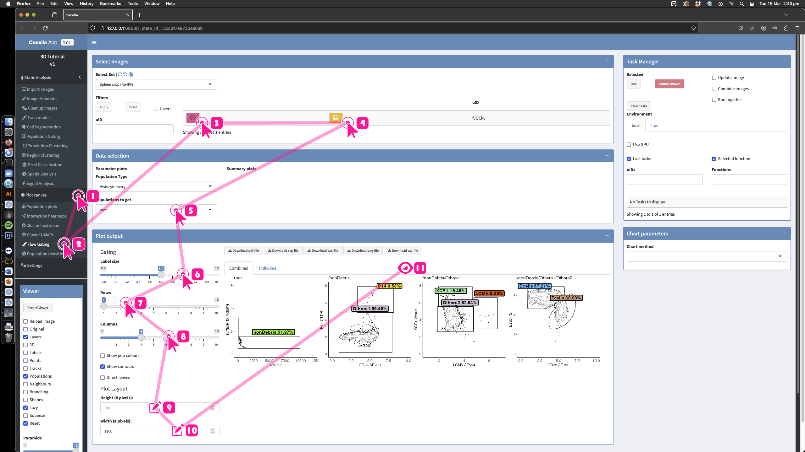
{kind=link}
{kind=link}
{kind=link}
7. Extract spatial interactions¶
In this example, we were interested in T cell clustering. In the Spatial analysis section are different methods to extract spatial interactions. We can utilise Cell clusters to extract LCMV specific cell clusters.
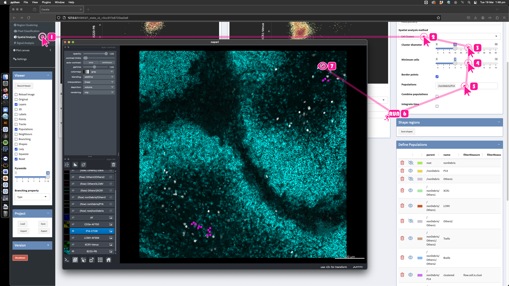The abundance of these clusters can then be visualised in the Population plots section.
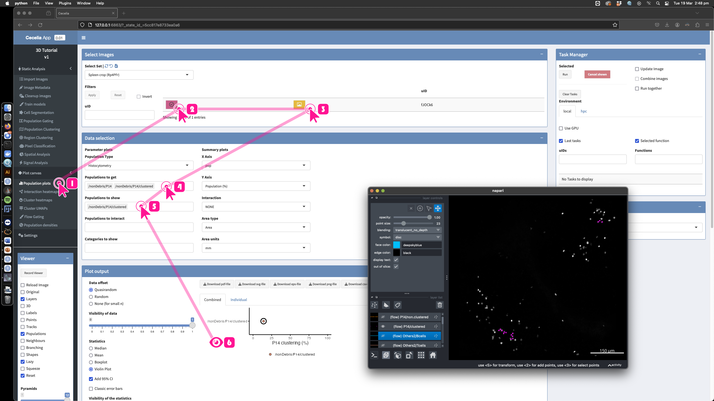
{kind=link}
{kind=link}
Live image¶
We will analyse M1-1-B6-naive-gBT-uGFP-OTI-CTV-P14-ubTomato-z300_0004-1.tif which is a two-photon movie of naive T cells within a mouse lymph node.
1. Create a project¶
{kind=link}
2. Import the image¶
{kind=link}
3. Define channel names¶
{kind=link}
4. Correct autofluorescence¶
Autofluorescence correction in two-photon images requires subtraction of individual channels from each other. Drift correction is also commonly required to account for tissue movement during the imaging period. We implemented autofluorescence correction by diving channels from each other. Drift correction is at the moment a simple planar correction using scitkit-image’s cross-correlation.
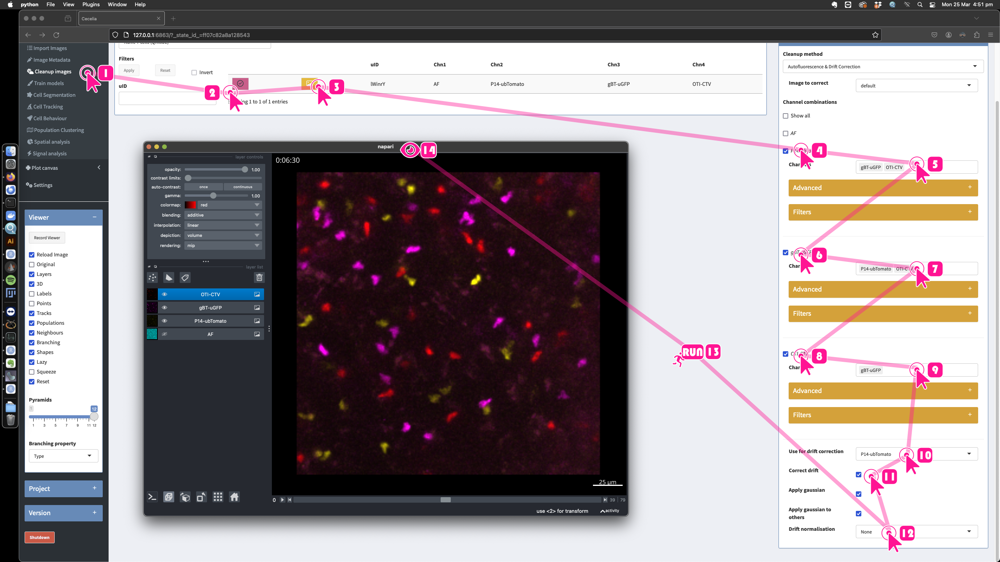Comparison between original and corrected images.
{kind=link}
5. Segment cells¶
Segmentation works in a similar manner to static imaging. Again, we mostly rely on Cellpose. For each cell population you must create a separate segmentation, ie/ P14, OTI and gBT cells will each have a separate segmentation. T cells can assume irregular shapes and various sizes and appear in tightly packed environments. While the cyto2 model is very good for general segmentation, we found that or own Cellpose model, ccia Fluorescent sometimes works better to extract T cell shapes from these movies. However, this model can also pick a lot more background than cyto2 depending on the image. We therefore recommend to try both and stick to the one that gives the best results for the current image.
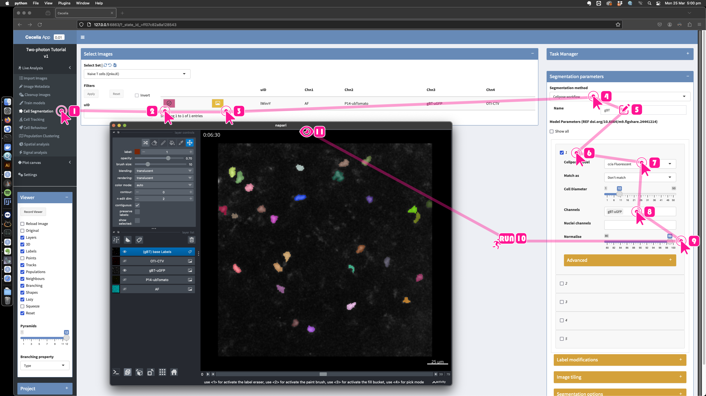Tip
For 3D images. If you require object measurements such as volume, then you must tick Extended Measurements in the Segmentation options.
{kind=link}
6. Define populations¶
We utilise btrack to track the segmented cells. The most important parameter is the search radius to find connecting cells between frames. If the segmentation is not 100% clean (ie/ there is some autofluorescence segmented), then we can define a filter to exclude those autofluorescent objects.
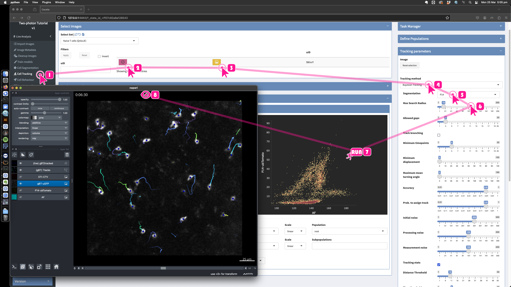The properties of the tracked cells can be plotted for different experimental conditions to, for example, compare cell speed or angle.
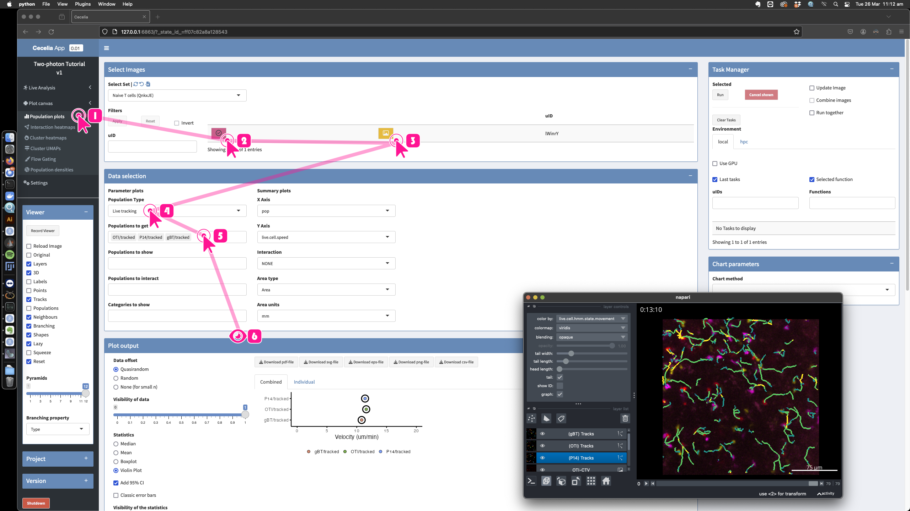
{kind=link}
{kind=link}
{kind=link}